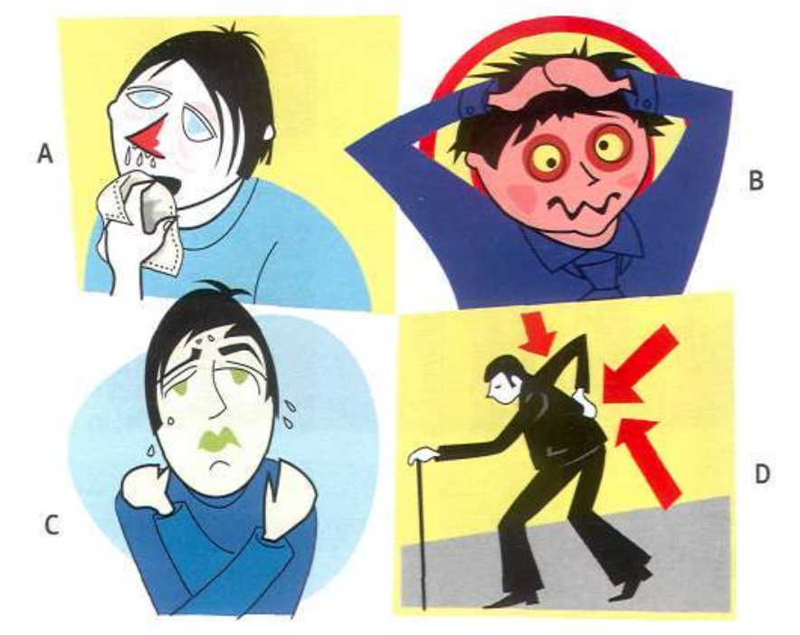

Not feeling well
Today we will
- talk about health problems
Vocabulary: health problems

ow are they? Use new words
FUNCTIONAL LANGUAGE: asking/saying how you feel
- Asking how you feel
- Saying how you feel
- How are you?
- I'm fine, thanks.
- Are you alright? OK?
- I'm very well, thanks.
- What's the matter? wrong?
- I don't feel (very) well. I feel sick/ill/tired. I've got a ...
Complete the dialogues using the words in the box.
well / got / are / matter
- A: Hi, how (1) you?
- B: Oh, I don't feel very (2)
- A: What's the (3) ?
- B. I've (4) a headache.
- A: You should lie down.
fine / wrong / home / I'm
- A: Are you alright? What's (1) ?
- B: I'm (2) , thanks. I'm a little tired.
- A: Do you want to go (3) ?
- B: No, (4) fine. Really.
fine / cold / head
- A: Can I go out now?
- B: No, you can't. You've got a (1)
- B: I feel (2) . My (3) doesn't hurt now.
- A: You should stay in bed.
Listen to the conversations.Choose the phrases you hear.
- Are you alright? Anything else?
- I don't like it. I don't feel well.
- I'm fine. Is there a doctor here?
- How's your stomach. You're welcome.
- Are you OK? I've got a headache.
Listen again and put the events in the correct order.
- Hannah calls a doctor.
- The doctor gives Valerie some aspirin.
- Valerie feels sick.
- Herb feels ill.
- Valerie goes to the toilet.
- Valerie sits down and puts on Dave's jacket.
Grammar: have got
Have got means the same as have.
It is common in spoken British English.
- I've got
- You've got
- He's got
- She's got
- It's got
- We've got
- You've got
- They've got
- I haven't got
- You haven't got
- He hasn't got
- She hasn't got
- It hasn't got
- We haven't got
- You haven't got
- They haven't got
- Have I got?
- Have you got?
- Has he got?
- Has she got?
- Has it got?
- Have we got?
- Have you got?
- Have they got?
Use have got:
• to talk about possession.
I've got a car.
• to talk about relationships.
I've got two brothers and sisters.
• to talk about states.
I've got a headache.
Roleplay 1 A: You feel ill. You have got a headache and you feel very sick. You are very tired. You don't think you can go to work. Phone your work and explain.
B: You are A's boss. When A phones you, listen to what he/she says and respond.
Roleplay 2 A: You are B's father/mother. You think B is ill. You think he/she shouldn't go out tonight. Listen to what B says and respond.
B: You are A's son/daughter. You are often tired because you go out too much! You want to go out tonight, but you don't feel well. Ask permission to go out.
Now I can
- Can you talk to someone about health problems?
- Photo by Kristine Wook on Unsplash
- Photo by Afif Kusuma on Unsplash